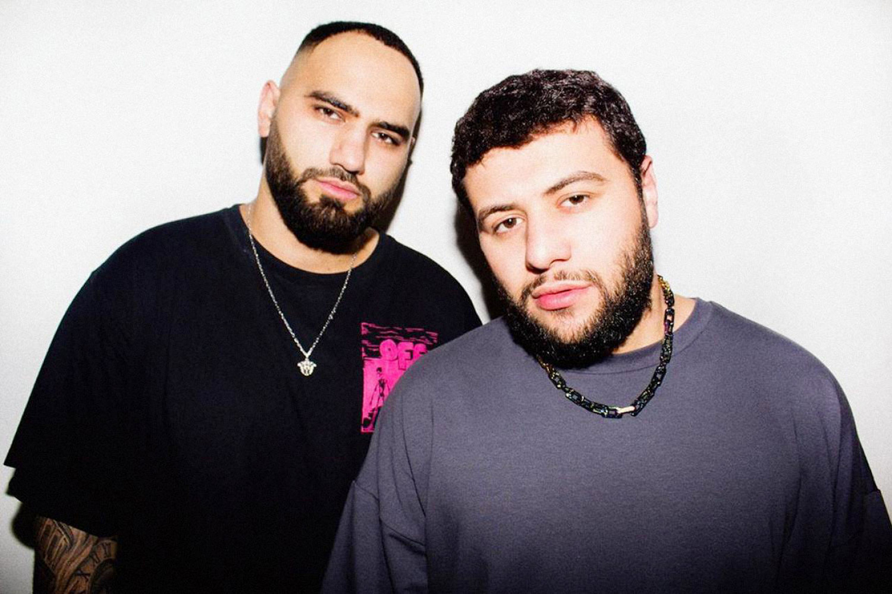

Их история началась в далеком 2018 году
Хамзат, родом из Чечни, уже имел опыт выступлений на сцене и авторства песен, в то время как Наваи, приехавший из Узбекистана, только начинал свой путь в музыке. Но несмотря на разницу в опыте и происхождении, между ними сразу же возникла крепкая творческая связь, и они решили объединиться, чтобы создать нечто новое и свежее в мире музыки. Первый сингл дуэта "Не моя" был выпущен в том же году и сразу же стал хитом, покорив сердца миллионов слушателей своей меланхоличной мелодией и искренними словами. После этого успеха Хамзат и Наваи решили создать группу HammAli & Navai и продолжать творить вместе. В 2019 году группа выпустила свой дебютный альбом "Химия", который стал настоящим прорывом для них. В альбом вошли такие хиты, как "Не моя", "Химия", "Без тебя" и многие другие. Каждая песня была наполнена эмоциями и искренностью, которые так ценят поклонники группы. После выхода альбома HammAli & Navai начали гастролировать по всей стране, давая концерты перед тысячами поклонников и завоевывая сердца все большего числа людей своей живой и энергичной музыкой. В 2020 году группа выпустила свой второй альбом "Время". В этом альбоме они решили идти на эксперименты и смешивать разные музыкальные стили, что дало им совершенно новый звук. Альбом стал настоящим прорывом для группы и принес им еще больше поклонников. В том же году они также получили престижную музыкальную награду "Золотой граммофон" за песню "Любимый город".
Но их история не заканчивается здесь.
Они продолжают творить, экспериментировать и расти, чтобы дарить своим поклонникам самую лучшую музыку. Они выступают на крупных концертных площадках и фестивалях, гастролируют по всей стране и за ее пределами, и каждый раз дают своим поклонникам незабываемые эмоции и впечатления. Группа HammAli & Navai - это не просто музыкальный коллектив, это настоящая история дружбы, творчества и достижений. И эта история продолжается и сегодня, благодаря поддержкемиллионов поклонников, которые любят и ценят их музыку.
